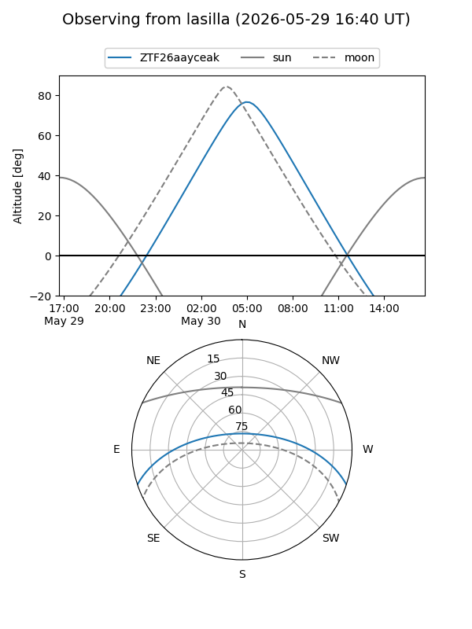
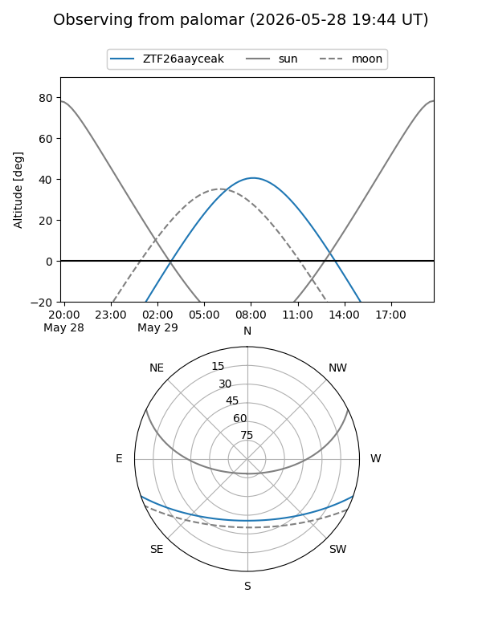

ZTF26aayceak
Target ZTF26aayceak at 2026-05-29 12:16
Aliases and brokers:
lsst-FINK: link
lsst-Lasair: link
lsst-ALeRCE: link
ztf-FINK: link
ztf-Lasair: link
ztf-ALeRCE: link
alt names
ZTF26aayceak (ztf,fink_ztf)
Coordinates:
equatorial (ra, dec) = 251.7684,-15.98937
equatorial (HMS+DMS) = 16:47:04.42,-15:59:21.74
galactic (l, b) = (3.1291,+18.43353)
Flags:
Photometry:
last ztfg=18.83
2 ztfg detections
Lightcurve
Visibility


Additional plots